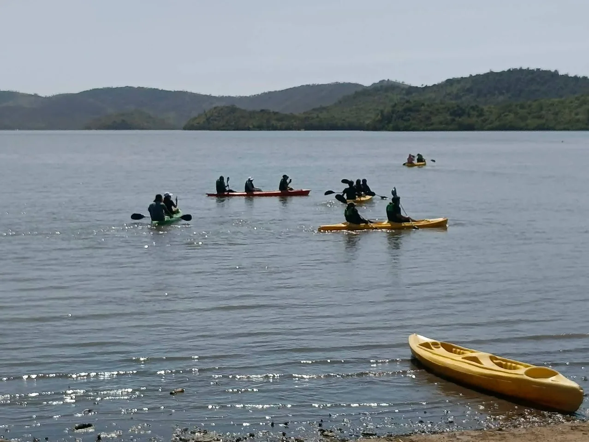
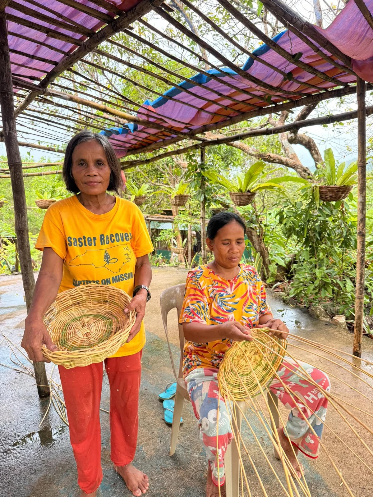
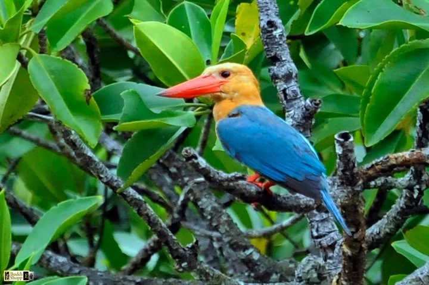
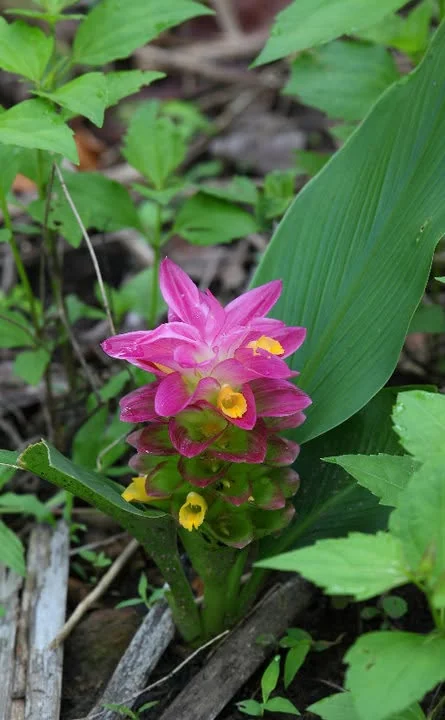

Paddle the mangroves
Explore the beach-side mangrove waterways by guided daytime kayak. Life jackets are required, and every kayak trip has a guide.
MANGROVE KAYAK
Guided mangrove, firefly and full-day nature experiences in Malbato, Coron.
TIDE NOTE Availability depends on low/high tide conditions and resulting water depth.
BOOK YOUR EXPERIENCETwo distinct visits await in Malbato: Kingfisher Park Beach for guided mangrove and evening-water experiences, and the BERAE guided tours for trails, biodiversity, regenerative farming, food security and community learning.
Choose a beach activity or the Complete Experience, or make a day of the BERAE trail-and-community tour. Guides and advance scheduling help keep each visit safe and personal.

Kingfisher Park Beach offers four individual activities; the BERAE Tour offers a much broader guided journey through natural and working landscapes.

Explore the beach-side mangrove waterways by guided daytime kayak. Life jackets are required, and every kayak trip has a guide.

Meet the shoreline after dark through the boardwalk or night kayak, with possible fireflies and bioluminescent plankton in suitable conditions.

Discover the separate BERAE Tour: hillside trails, birdwatching, regenerative agriculture, community activities and food-security learning.
Beach: four individual activities, including the ₱1,000 Complete Experience. BERAE: Tour A (8 AM–5 PM) or Tour B (8 AM–7 PM), with group-based tour rates.
EXPLORE THE EXPERIENCESBioluminescent plankton can sometimes create a fleeting glow in the water — one of the special possibilities of a night visit to Malbato.
Ask about the guided Fireflies + Night Kayak or the day-to-night Complete Experience. Visibility varies with season, tide, weather and other natural conditions; a glowing display is never guaranteed.
EXPLORE NIGHT EXPERIENCES
Beyond the waterways, Kingfisher Park connects biodiversity enhancement, regenerative farming and local enterprise through BERAE. On a full-day guided tour, community and farm stops give visitors a closer look at those connections.
Birdwatching, native vegetation and the mangrove habitat reward close observation. Discover the park’s photography collection and the importance of respecting wildlife without expecting guaranteed sightings.
EXPLORE BIODIVERSITY

Weekdays 1:00–9:00 PM; weekends 5:00–9:00 PM by advance notice. Staff are on call. Beach bookings include daytime paddling, evening viewing and the Complete Experience.
SEE BEACH ACTIVITIES →Tour A runs 8:00 AM–5:00 PM; Tour B extends to 7:00 PM. Visit trails, agriculture and food-security sites with a guided itinerary and meals.
SEE BERAE TOURS →Kingfisher Park is open seven days a week, but each experience has its own schedule and is subject to available guides, safe conditions and advance reservation.
Google Maps points to the beach entrance
Weekends 5–9 PM · advance notice required
Tour B 8 AM–7 PM · guided
Kayaking: 28 people including guide(s) per session
The park requires advance coordination and full online payment for confirmed bookings. This prototype explains the offerings; actual schedules, payment and confirmation remain in the native Wix Bookings system.
PLAN YOUR EXPERIENCE ↗